Before/after sheet · ADR-114 · LOCAL · 18 October 2026
Whole points with close-call decimals, before and after
The real ranklist on LOCAL, built twice from the same database: before is main (5711bf08), after is claude/ranklist-close-call-decimals. Only the list’s numbers change; the drilldown is byte-identical. Names are masked because this page is committed (ADR-078).
What the sheet shows
The rule holds on real lists; nothing else moves
| Check | Result |
|---|---|
| Close calls show a small grey decimal in the ordering column only | yes: cases 1–3 |
| Two decimals where one would still look equal | yes: case 1, 71.34 · 71.31 |
| Exact ties stay whole | yes: case 4 |
| Every other number whole, a half rounding up | yes; checked against the exact values (e.g. 432.49 → 432, 542.51 → 543) |
| Column widths and row heights | unchanged |
| The drilldown (épée men V1, Ranking, row 5), desktop and phone | byte-identical PNGs of the screen, and identical text of the whole drilldown, scrolled parts included |
| Tests and gates | RT.ROUND.01–10 green (01–08 seen red first; 09–10 are guards, green before and after); scripts/preflight.sh exit 0 |
How it was made: two production builds (vite build), the only difference being RanklistTable.svelte; each served to headless Chromium by request interception, against LOCAL’s Supabase, at device scale 2. The active season is read with the rolling carry-over, as the site reads it. LOCAL’s close calls match PROD’s.
1 · Two decimals: épée, women, V0 · Ranking 2026/27
Rows 5 and 6 are 71.34 and 71.31. Today both read 71.3, so they already look tied; after, 71.34 and 71.31. Every other number is whole.
Desktop, 1280 px
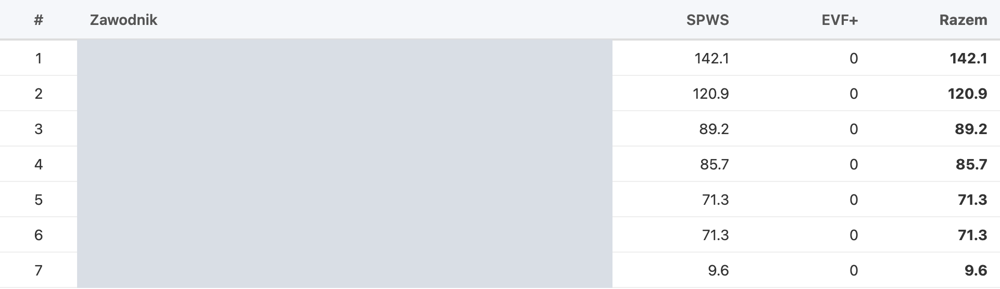
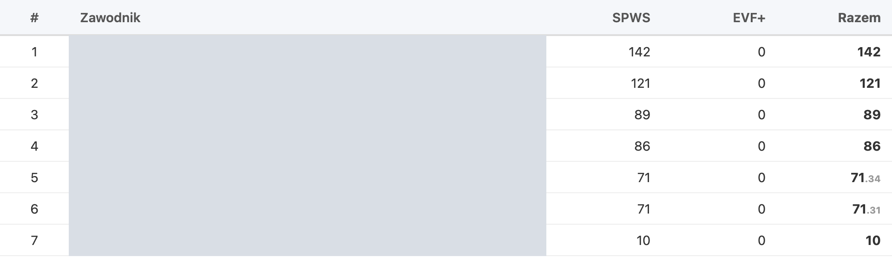
Phone, 375 px
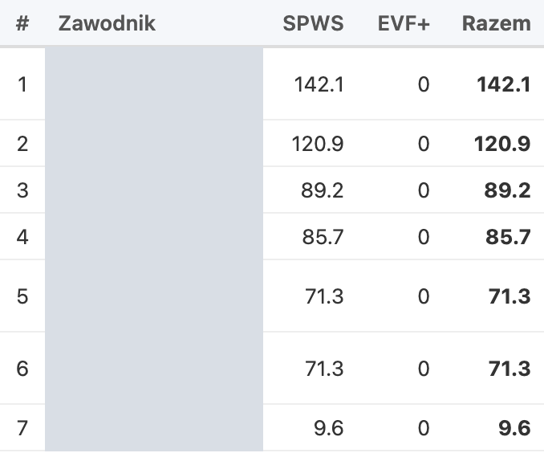
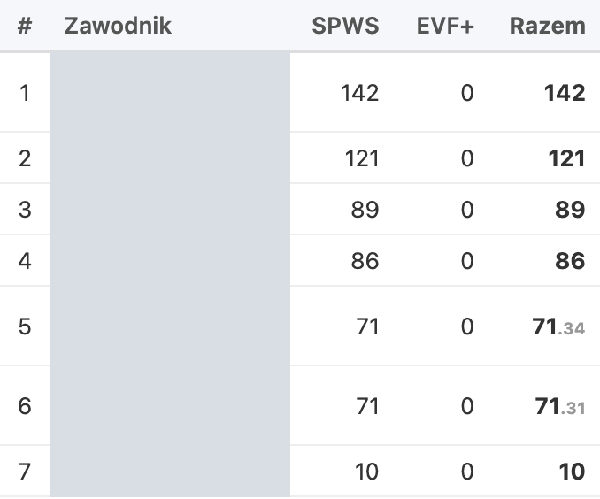
2 · Four close calls: épée, men, V1 · Ranking 2026/27
Rows 5–6 (171.39 · 170.94), 17–18 (23.39 · 22.71), 19–20 (18.26 · 17.51) and 23–24 (6.15 · 5.72) keep a small decimal in Razem; their SPWS and EVF+ stay whole. Row 2 is one of the accepted sums that miss by one: 110.02 + 432.49 = 542.51 shows 110 + 432 = 543.
Desktop, 1280 px
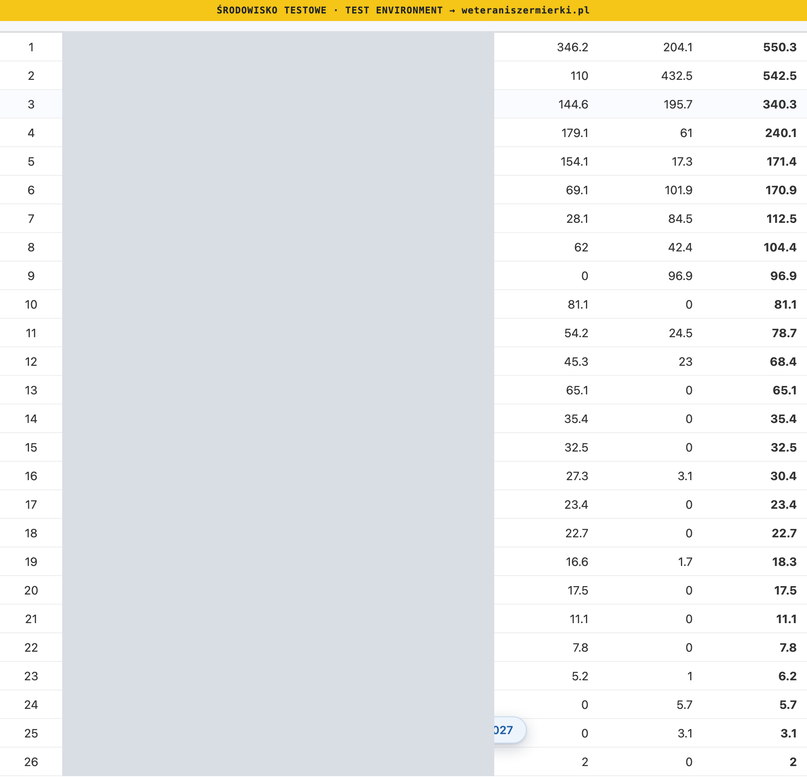
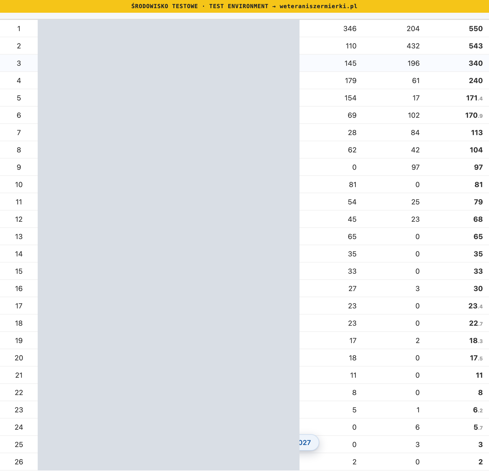
Phone, 375 px
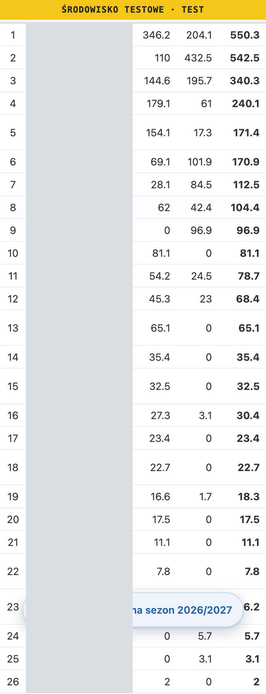
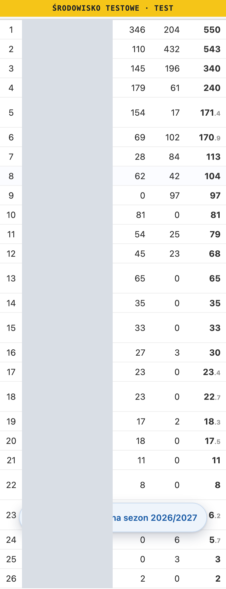
3 · A PPW close call: épée, men, V3 · PPW 2025/26
Rows 9 and 10 are 22.09 and 21.90: 22.1 and 21.9. The other rows are whole.
Desktop, 1280 px
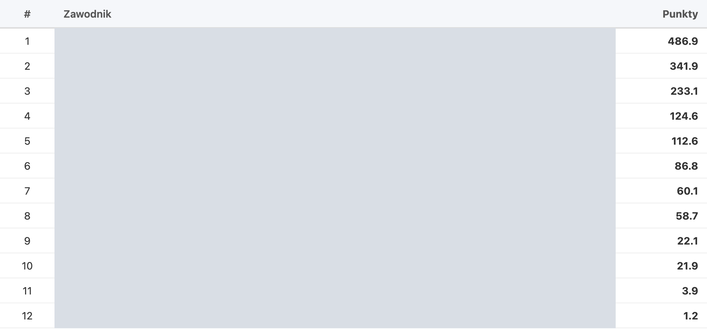
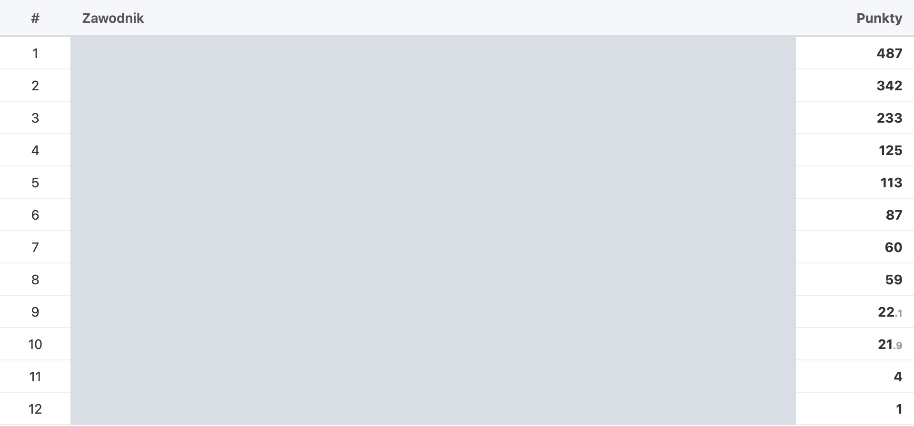
Phone, 375 px
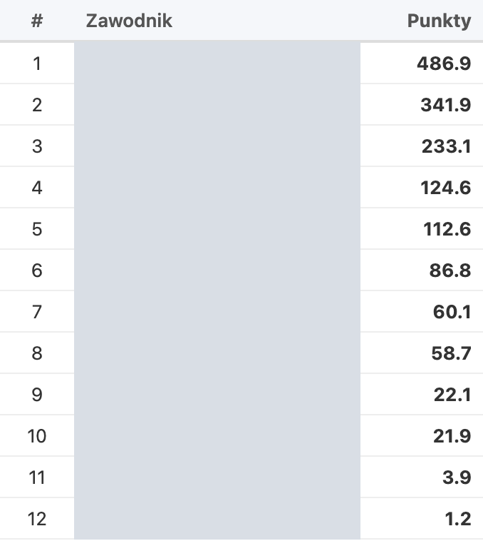
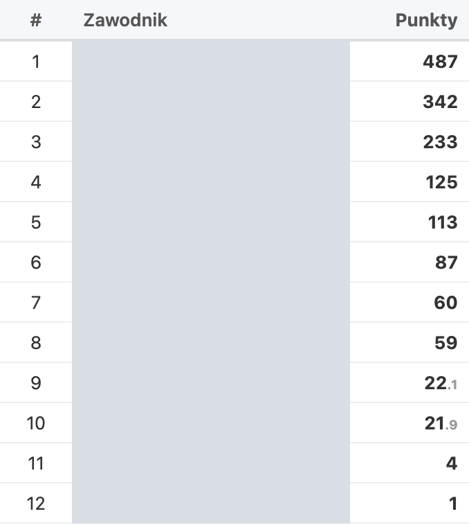
4 · Exact ties stay whole: sabre, men, V0 · PPW 2025/26
Rows 6 and 7 are both 37.74 and show 38 · 38; rows 10 and 11 are both 5.33 and show 5 · 5. No decimal can explain an order the database does not fix (ADR-114, open item 1).
Desktop, 1280 px
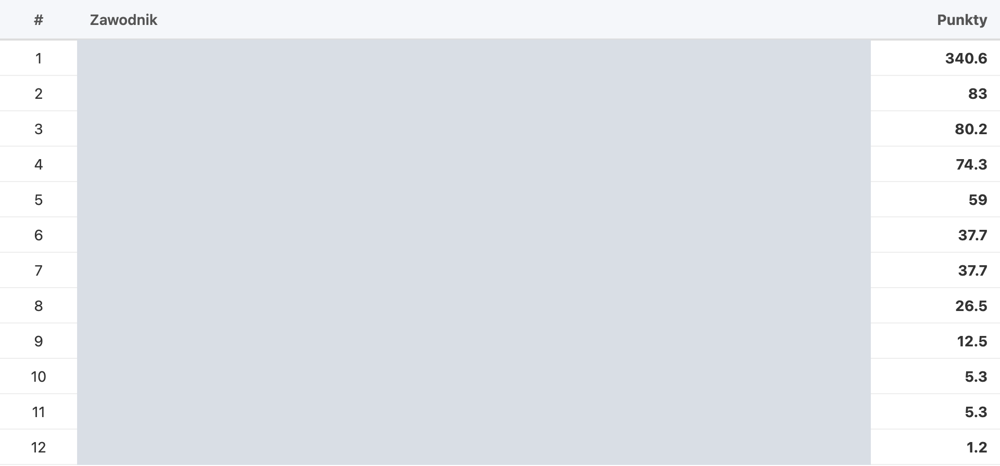
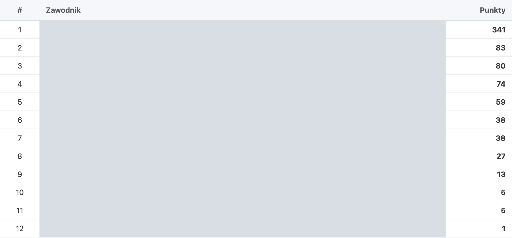
Phone, 375 px
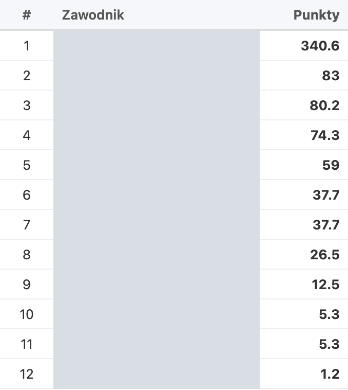

5 · The drilldown does not change
Épée, men, V1, Ranking 2026/27, row 5 (171.39). The headline keeps 171.4; the bars, tables and cards keep one decimal. The list behind the modal is hidden so it cannot enter the comparison. The pictures show the first screen; the whole drilldown’s text, the parts below included, was compared as well and is identical.
Desktop, 1280 px
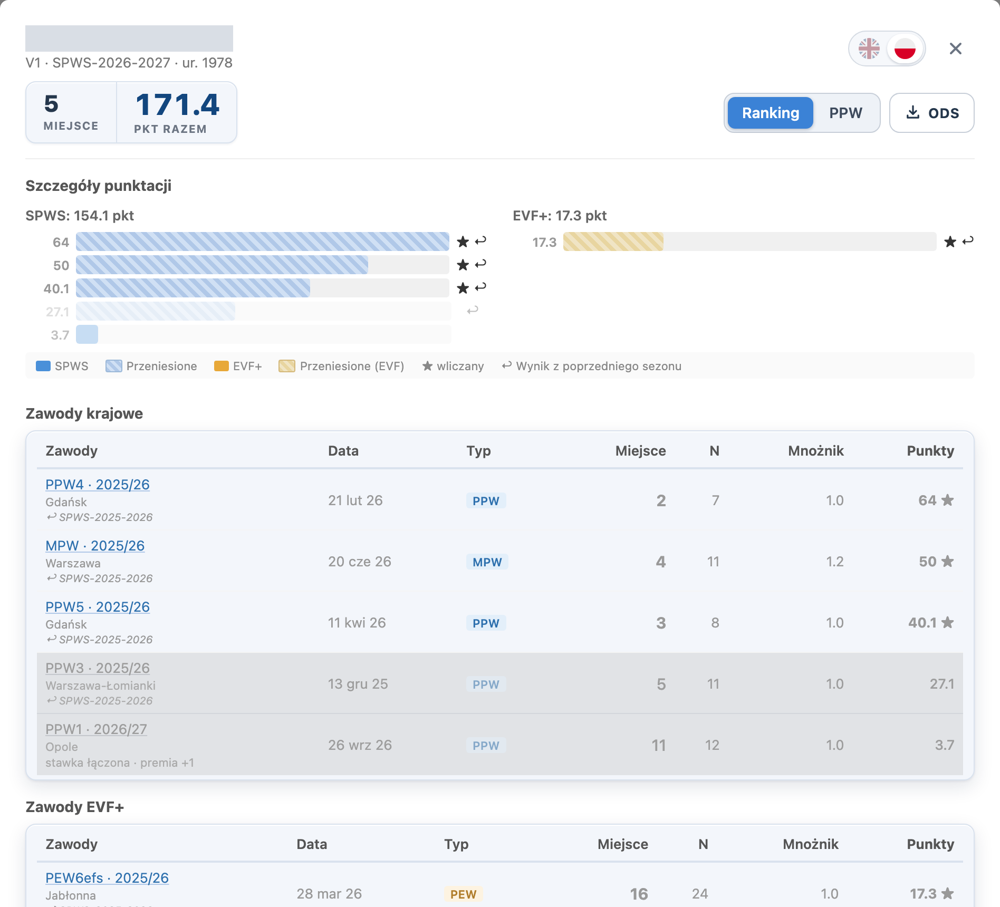

Phone, 375 px
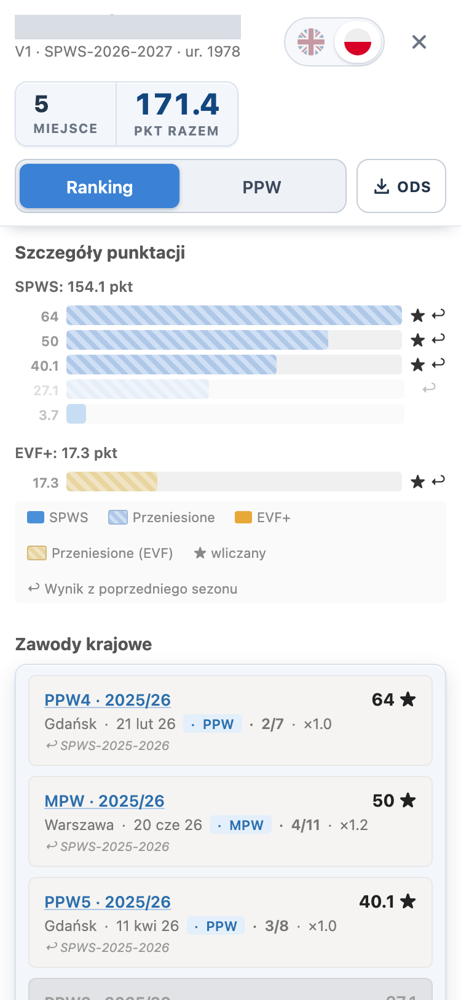

Decide this
Approval
A1 · Approve the sheet and release?
A (recommended): approve; I commit with explicit paths, integrate, push integration/main:main, announce the wait, watch CI and the Release to green, and check PROD’s ranklist page, drilldown and ODS. A push to main reaches PROD’s WordPress pages with no further approval.
B: change something first: say what.
Sources. Builds: main 5711bf08 and the branch’s RanklistTable.svelte; LOCAL Supabase (seed exported from PROD on 17 October 2026). Lists: fn_ranking_full / fn_ranking_ppw, 2026/27 rolling, 2025/26 not. Exact values checked on LOCAL with fn_ranking_full('EPEE','M','V1', 2026/27, true). Scripts kept in the session scratchpad: shoot_sheet.cjs, build_sheet.py.